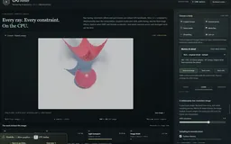

A CPU workload in a browser shell
C++/WebAssembly computes the simulation and pixels; WebGL2 uploads and displays the completed image.
Smoke, cloth, path tracing, voxel splats and image processing, computed on the CPU in a browser. The deliberately pixelated view makes SIMD, threads and accumulation easy to compare: change the quality and inspect where the time goes.
Explore connections
The live stage diagram separates dynamics, geometry, transport and image finishing.
Advance smoke and constrained cloth with explicit simulation settings.
Update geometry/BVH data and compute surface and volume contributions on the CPU.
Apply reconstruction, denoising and optional painterly or vintage effects.
Hold the workload fixed while measuring SIMD, thread count and complete-frame costs.
C++/WebAssembly computes the simulation and pixels; WebGL2 uploads and displays the completed image.
The scene worker keeps the UI responsive; Pause & converge isolates progressive image accumulation.
Scalar/SIMD and thread comparisons distinguish coherent arithmetic, irregular gathers and threading overhead.
An Eulerian smoke grid interacts with position-based cloth through drag and moving obstacles. The renderer follows the resulting geometry with a BVH, surface path tracing and a coarse single-scattering volume model. Fire emission reads the temperature field rather than painting an unrelated screen-space flame.
The fixed simulation timestep and chosen image-quality budget are separate controls. Pause & converge stops dynamics while accumulating the image. Smoke, cloth and image finishing make this a varied CPU workload rather than a single synthetic arithmetic benchmark.
Selected hot kernels use a common four-lane abstraction with scalar and real WebAssembly SIMD implementations. Divergent material choices, irregular volume lookups and scalar BVH traversal remain important limits. The cloth solver is deliberately serial where parallel overhead exceeded the useful work.
A dedicated browser worker computes complete frames and a persistent worker team supplies C++ parallel passes. Stage timings, worker compute and completed-image cadence have explicit boundaries; the application does not interpolate synthetic frames or report primary samples as all traced rays. Device-local measurements replace universal speedup promises.
The compact image can receive CPU denoising, validated surface-history reconstruction, oil-paint processing or vintage finishing. Optional voxel supports trade smooth volume coverage for an explicit coarse spatial representation while retaining the underlying fluid.
The rough-metal and clearcoat models and the volume march are illustrative approximations. GPU presentation does not make this a GPU simulation, and SIMD startup checks are not a proof of complete scalar/SIMD equivalence. The source reports separate numerical tests and workload measurements.

Recorded examples · 1Interface and technical resultThe recorded view keeps the result beside the controls and intermediate explanation.＋